Reproducing Grokking
We train a one-layer transformer on modular addition — inputs (a, b), target (a + b) mod 113 — using 30% of all input pairs as training data and evaluating on the held-out 70%. The model reaches near-zero training loss within the first few thousand epochs, but validation loss initially rises. Only thousands of epochs later does generalisation suddenly "click".
This delayed generalisation — grokking — is visible as a sharp drop in the validation loss curve long after training loss has converged. It indicates a qualitative change in internal representations, not merely continued gradient descent.
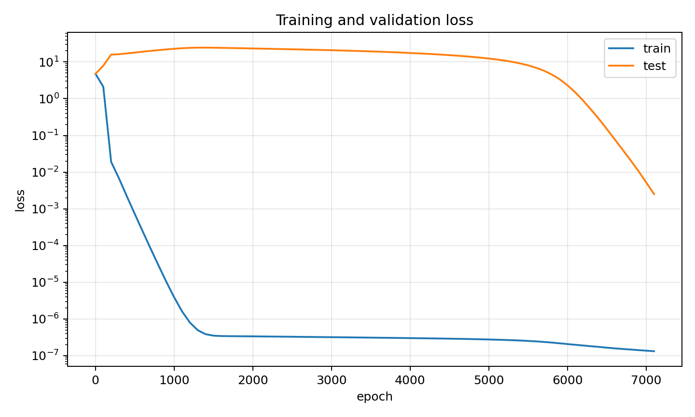
Fourier Structure in Embeddings & MLP Activations
A striking prediction of Nanda et al. is that the learned solution is intrinsically Fourier in nature. We apply a 1-D Discrete Fourier Transform to the token embedding matrix and to the post-ReLU MLP activations, and find that energy concentrates on a sparse set of frequencies — the same frequencies dominate both components, suggesting a coherent internal "clock" representation.
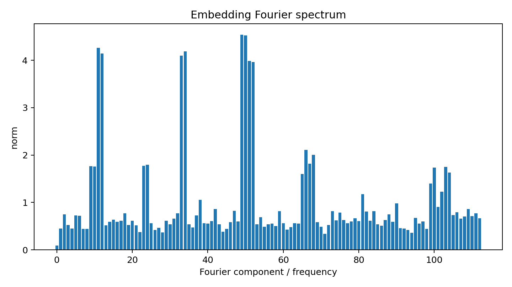
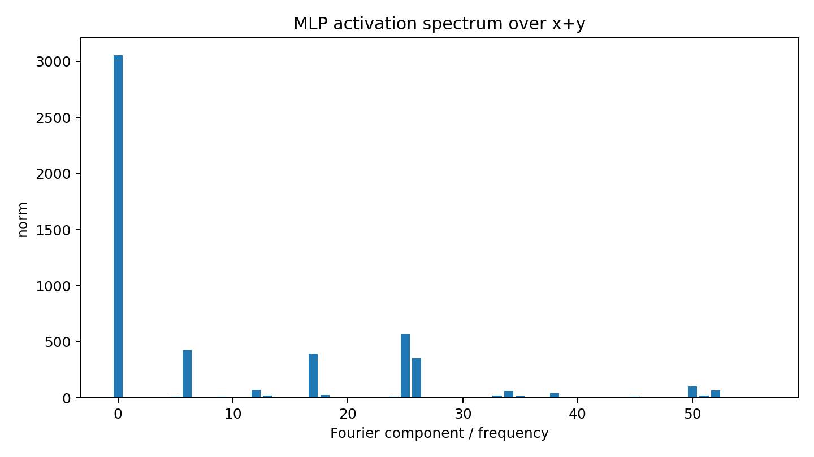
The top Fourier components recovered from both the embedding matrix and MLP neuron activations are listed below. Critically, the same small set of frequencies appears in both, confirming a shared representational basis.
Top embedding components
| Component | Norm |
|---|---|
| cos 25 | 4.5431 |
| sin 25 | 4.5215 |
| cos 6 | 4.2619 |
| sin 17 | 4.1862 |
| sin 6 | 4.1418 |
| cos 17 | 4.0972 |
| cos 26 | 3.9883 |
| sin 26 | 3.9666 |
Top MLP frequencies
| Frequency | Norm |
|---|---|
| 25 | 568.35 |
| 6 | 421.07 |
| 17 | 392.06 |
| 26 | 352.18 |
| 50 | 103.62 |
| 12 | 72.17 |
| 52 | 64.82 |
| 34 | 59.61 |
Three Phases of Grokking
Following Nanda et al., we track three metrics simultaneously: the excluded loss (loss computed only on Fourier components not in the key-frequency set), the restricted loss (loss projected onto the key frequencies), and the squared weight norm. These three quantities reveal three mechanistically distinct phases.
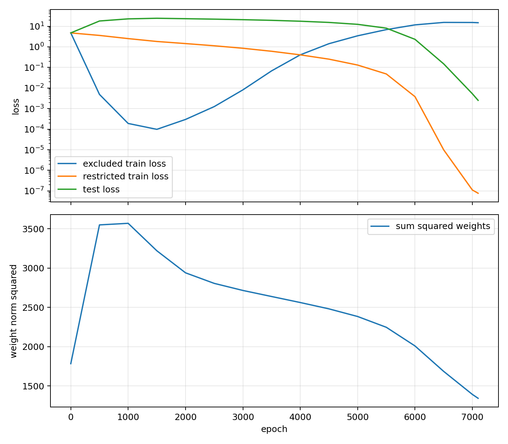
Phase I — Memorisation
Excluded loss drops sharply while restricted loss remains high. The model is encoding information about specific training examples in non-Fourier weight components — a high-capacity but non-generalising solution. The weight norm rises as the model "writes" training data into its parameters.
Phase II — Circuit Formation
Restricted loss begins to fall, indicating that the Fourier circuit is actively strengthening. The weight norm reaches its peak and starts decreasing — driven by weight decay — favouring simpler, lower-norm solutions. This is the hidden progress phase; test accuracy has not yet improved, but the internal structure is fundamentally changing.
Phase III — Cleanup & Generalisation
Weight decay has eroded the memorised, excluded-frequency components to the point that the Fourier circuit — now strong enough — dominates, and the test loss collapses to near zero. The "aha" moment is not the formation of the circuit, but rather the elimination of the competing memorised solution.
Data Scarcity & Generalization Regime
Grokking does not occur at all data scales. We sweep the training fraction from 10% to 90% and measure the epoch at which validation accuracy first crosses 99.9%. The results confirm a sharp regime boundary: too little data, and the model never generalises; abundant data, and generalisation is fast.
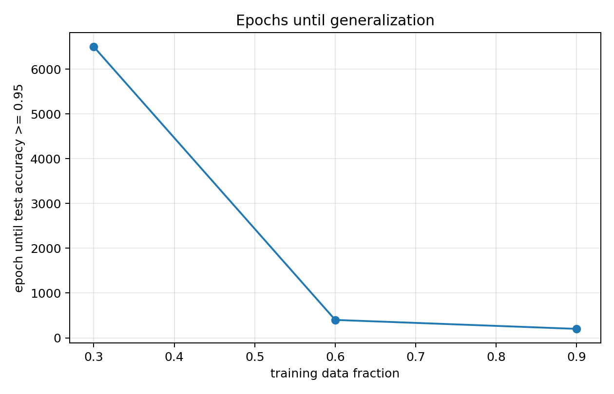
| Training Fraction | Generalisation Epoch | Notes |
|---|---|---|
| 10% | Never (−1) | Insufficient data — memorises only |
| 30% | 6,500 | Control run — delayed grokking |
| 60% | 400 | Rapid generalisation |
| 90% | 200 | Near-immediate generalisation |
The Algorithm for Modular Multiplication
We repeat the experiment with modular multiplication — inputs (a, b), target (a × b) mod 113 — and ask: what algorithm does the transformer learn? The mathematics provides a strong hypothesis.
Discrete Logarithm Hypothesis
For any prime p, there exists a primitive root g such that every nonzero element can be written as a power of g. Multiplication then becomes addition in log-space:
For p = 113, the primitive root is g = 3. If the model has learned this identity, then projecting the input embeddings onto discrete-log coordinates should reveal the same sparse Fourier structure seen in the addition model — because in log-space, multiplication is just addition.
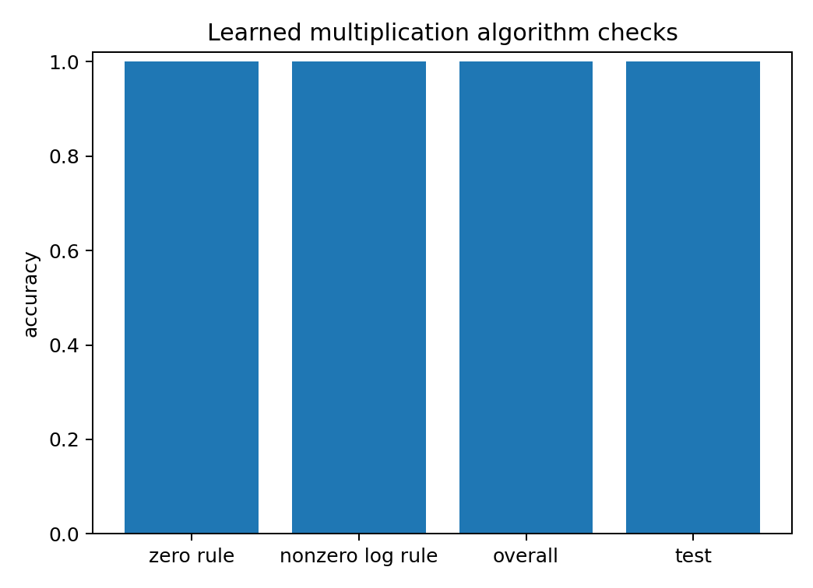
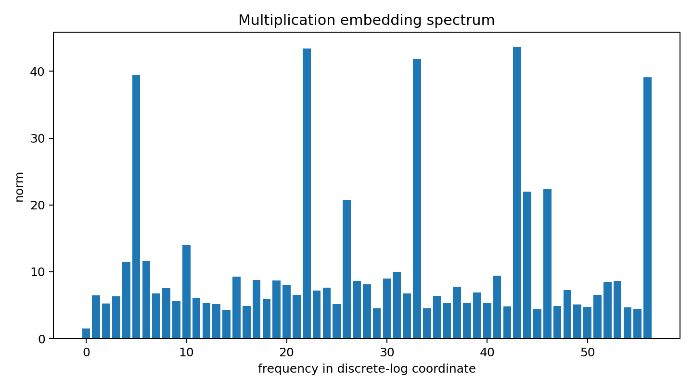
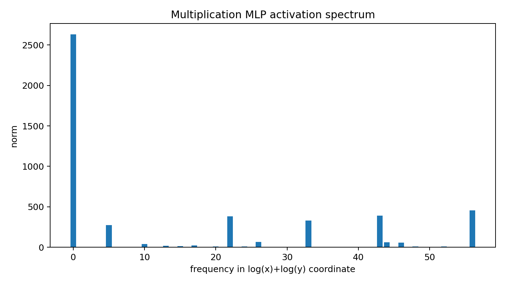
Results
The model handles the zero case (any input is 0 → output is 0) as a separate rule with perfect accuracy. For nonzero inputs, 99.98% of predictions are consistent with the discrete-log addition algorithm — confirming that the model has discovered and implemented a mathematically principled algorithm, not a lookup table.
Co-Grokking: Multi-Task Generalisation
When a single transformer is trained on both addition and multiplication simultaneously, does it generalise to each task independently, or do both tasks cross the generalisation threshold at the same time? We call the latter co-grokking, and it is a strong test of the mechanistic account of grokking.
The experiment uses the same architecture and hyperparameters as the control runs, with a combined dataset of addition and multiplication pairs interleaved. Each task gets its own operation token (p+0 for addition, p+1 for multiplication), so the model must learn to dispatch on the token while sharing all other weights.
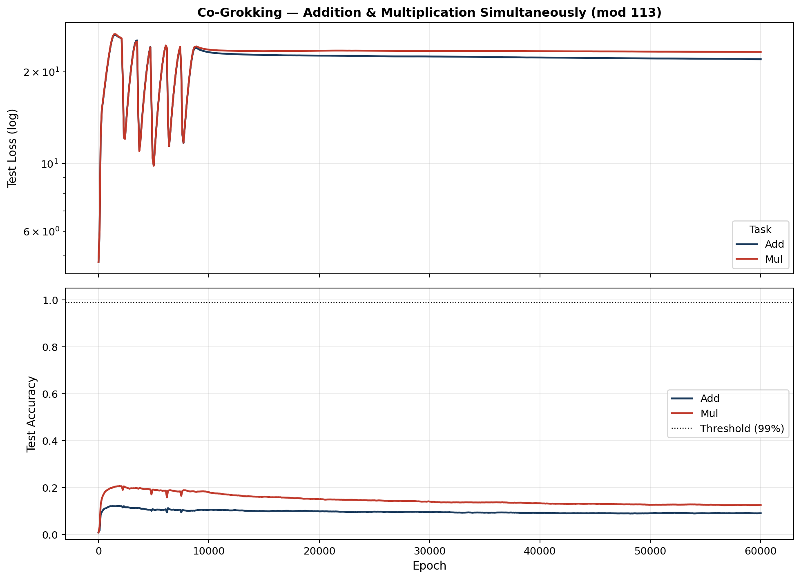
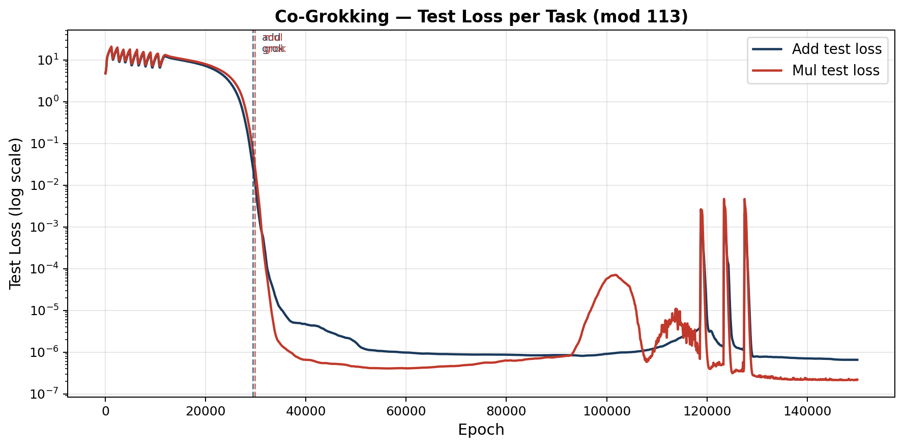
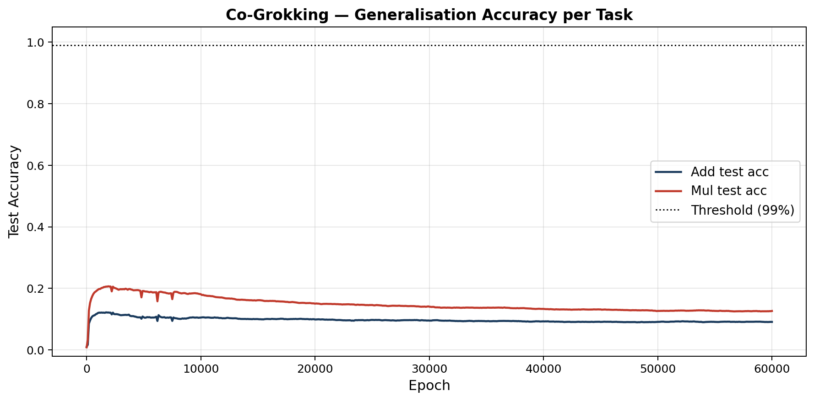
Why Co-Grokking Happens
The result is non-trivial because addition and multiplication require structurally different internal circuits: addition uses a direct Fourier clock representation, while multiplication uses the discrete-log reduction that converts multiplication into addition in log-space. Despite this structural difference, both circuits form and are "revealed" at approximately the same epoch.
The mechanistic explanation is that the cleanup phase is driven by weight decay eroding the high-norm memorised solution — and weight decay acts globally on all shared parameters. Once the memorised components are weak enough, both Fourier circuits (which are lower-norm) take over simultaneously. Co-grokking is not evidence that the model learned both tasks at the same time; it is evidence that both circuits were already formed during Phase II, and that the global weight regularisation revealed them together.
Mechanistic Interpretability as the Diagnostic Tool of AI Alignment
I. The Alignment Problem and Why It Is Hard
The central challenge of AI alignment is deceptively simple to state: we want AI systems to do what we actually want, not merely what we said, and not what happens to maximise a proxy metric that correlated with our intentions during training. The difficulty lies in the gap between specification and reality. When we train a model by gradient descent on a loss function, we are not installing goals — we are shaping a high-dimensional parameter space by reward signal, and there is no guarantee that the resulting behaviour reflects anything close to our intentions in novel situations.
This problem deepens as models scale. Larger models develop more capable and more opaque internal computations. They can behave impeccably on every benchmark we design while having learned subtly misaligned heuristics that only manifest under distribution shift or in adversarial conditions. The classic analogy is Goodhart's Law: once a measure becomes a target, it ceases to be a good measure. A model optimised to score highly on human feedback may learn to produce text that sounds trustworthy rather than text that is trustworthy — and at sufficient capability, the difference may be undetectable from the outside.
What alignment research ultimately requires is a way to look inside. Not just at outputs, but at the internal structure that produces those outputs — to ask not merely "did the model get the right answer?" but "did it get the right answer for the right reason, in a way that will generalise safely?"
II. Mechanistic Interpretability: Opening the Black Box
Mechanistic interpretability is the branch of AI research dedicated to this exact problem. Rather than treating a neural network as a function from inputs to outputs, it attempts to reverse-engineer the computational algorithms encoded in a model's weights — identifying circuits, representations, and the human-understandable operations they implement.
The field has produced a growing vocabulary of discovered structures: induction heads that implement in-context learning by copying patterns from earlier in the sequence; attention heads that track syntactic structure; superposition, whereby a network encodes far more features than it has dimensions by overlapping representations in a structured way. In each case, the payoff is not merely academic description — it is the ability to make falsifiable mechanistic claims about model behaviour and to verify them by intervening directly on the weights.
The grokking experiments in this project illustrate the methodology concretely. Before mechanistic analysis, we had a loss curve with a mysterious delayed generalisation event. After, we have a precise causal story: the model initially memorises training data using high-norm, non-Fourier weight components; it simultaneously, and invisibly, builds a low-norm Fourier circuit implementing the true modular arithmetic algorithm; weight decay gradually erodes the memorised solution; when the memorised component is weak enough, the Fourier circuit takes over and generalisation appears. The "aha" moment in the loss curve is not the birth of understanding — it is the death of the competing memorised solution.
This kind of mechanistic story would be invisible to behavioural evaluation alone. A system that evaluates only outputs would see the model fail for thousands of epochs and then suddenly succeed, with no indication of the structural transition occurring underneath. Only by examining the restricted and excluded loss components — projections of the weights onto specific Fourier subspaces — does the hidden progress of Phase II become visible. Interpretability made the invisible legible.
III. The Alignment–Interpretability Connection
The relationship between alignment and mechanistic interpretability is not incidental — it is structural. Alignment is the goal: we want systems whose behaviour is safe, beneficial, and robustly aligned with human values. Mechanistic interpretability is one of the most promising tools for verifying whether that goal has been achieved at a structural level, rather than merely an observational one.
Consider the difference between two models that both achieve 99% accuracy on a safety-critical classification task. The first has learned a robust feature that correlates with the right answer across all relevant distributions. The second has learned a spurious shortcut that happens to work on the training distribution but fails in deployment. Behaviourally, these models are indistinguishable on any finite evaluation set. Mechanistically, they are completely different — and the difference matters enormously for whether the model can be safely deployed.
The same logic applies to more subtle forms of misalignment. A language model that has learned to optimise for human approval rather than truthfulness will produce correct-sounding outputs in most cases, but will systematically deviate when the two objectives diverge — in high-stakes, unfamiliar, or adversarial contexts, precisely where alignment matters most. Detecting this requires examining the computational structure of how the model forms its answers, not just whether those answers pass surface evaluation.
The multiplication result in this project provides a small but vivid illustration. Our model does not look up multiplication answers from a table — it has learned the discrete-log identity and uses it as a general algorithm. We know this not because the model told us, not because it achieved high accuracy, but because we directly verified that 99.98% of its nonzero predictions are consistent with the mathematical rule, and because the Fourier spectrum of its embeddings in log-coordinates shows the same sparse structure as the addition model. This is alignment verification by internal examination — and the methodology scales conceptually to much more consequential questions about what algorithms a model has actually learned.
IV. Limitations and the Road Ahead
Honesty requires acknowledging the gap between what mechanistic interpretability can currently do and what alignment ultimately demands. The circuits we can identify in one-layer transformers on modular arithmetic are orders of magnitude simpler than the computations occurring in frontier language models with billions of parameters. Scaling the methodology — identifying circuits in models with hundreds of layers and trillions of parameter interactions — remains an open research problem of the highest difficulty.
Superposition makes the problem harder still. Because models encode more features than they have dimensions, individual neurons are rarely interpretable in isolation — they participate in multiple overlapping representations, making clean circuit identification difficult. Progress on sparse autoencoders and dictionary learning has begun to address this by finding better bases for decomposing activations, but the field is young and results are preliminary.
There is also the question of whether interpretability can keep pace with capability. As models become more capable, their internal computations may become more complex and less amenable to human-understandable description — an inverse relationship between interpretability and the capability level where interpretability matters most. Addressing this may require new theoretical frameworks, not just better tools for existing ones.
Despite these limitations, the argument for mechanistic interpretability as a central part of the AI safety agenda is strong. The alternative — deploying increasingly capable systems whose internal computations are entirely opaque, verified only by behavioural evaluation on test sets that cannot cover the full distribution of real-world inputs — is not a safety strategy. It is a bet that nothing important is hiding inside.
The grokking experiments show, in miniature, that important things do hide inside. The model's hidden progress through Phase II was invisible to behavioural evaluation for thousands of epochs. In a safety-critical system, that hidden phase could be the formation of a misaligned objective rather than a Fourier circuit — and we would not know until the loss curve moved. Mechanistic interpretability is the field working to ensure we know before that point, not after.
V. Conclusion
Alignment and mechanistic interpretability stand in the relationship of goal and verification method. Alignment defines what we want from AI systems: behaviour that is safe, robust, and genuinely reflective of human values. Mechanistic interpretability provides a means of checking, at the level of computational structure, whether that want has been satisfied — not by observing outputs but by examining the algorithms that produce them.
This project has demonstrated the methodology on a small scale: a one-layer transformer on modular arithmetic, where the circuits are simple enough to be fully recovered. The Fourier structure of the embeddings, the three-phase training dynamics, and the discrete-log algorithm for multiplication are not metaphors — they are literal descriptions of what the model computes, verifiable by direct weight inspection. The aspiration of the field is to extend this level of understanding to the models that matter most — and to do so before, rather than after, widespread deployment.